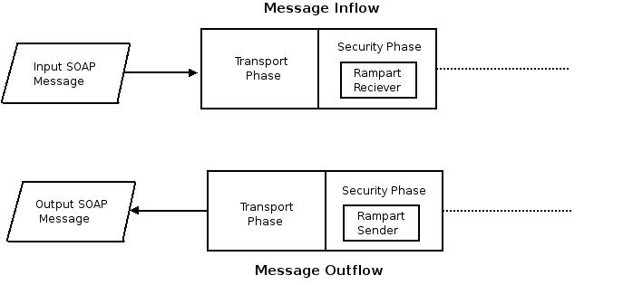
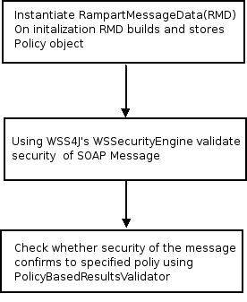
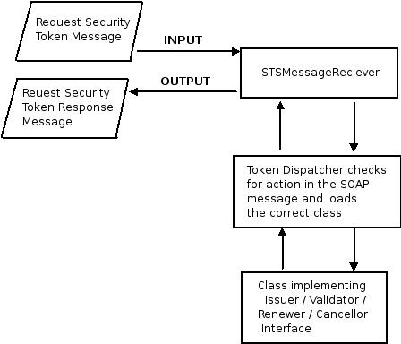

of handlers Rampart is the security module of Axis2. It secures SOAP messages according to specifications in WS-Security stack. Rampart implements following specifications,

Figure 1 : Rampart Components and WS-Security Stack
$mvn clean installWhen deploying rampart.mar and rampart-trust.mar in Axis2 repository you may notice that they do not contain any dependencies. Therefore all the dependencies must be in the classpath.
Rampart is deployed as a module in Axis2, in the security phase. Security phase is right after the Transport phase. Rampart module introduces couple of handlers - "org.apache.rampart.handler.RampartReciever" and "org.apache.rampart.handler.RampartSender" to the security phase
Figure 2 : Rampart in Axis2
"RampartReciver" handler intercepts the incoming message. Then Rampart validates the security of the incoming message, and checks whether it is in-line with the specified security policy. All security actions such as decryption of the message, validating the digital signature, validating the timestamp and authenticating user happens inside the Rampart module.
"RampartSender" is the last handler in the outflow. Outgoing message is intercepted by this handler and Rampart takes the security actions. For example SOAP message can be encrypted, digitally signed, and security tokens are included according to the security policy.
Rampart uses WSS4J for securing SOAP messages. WSS4J is an Apache project which implements WS-Security specification. SOAP messages are signed and encrypted according to XML Encryption and XML Digital Signature specifications, but the WS-Security specification introduces an additional set of rules. Therefore WSS4J ensures that SOAP messages are singed according all the rules defined in the specifications. WSS4J uses Apache's xmlsec libraries for XML Encryption and XML Digital Signature.
Rather than re-inventing the wheel, it was decided to use WSS4J for SOAP message security in Rampart but there was a fundamental problem. WSS4J and all the incorporating XML security libraries use "DOM" for parsing and generating XML, while Axis2 uses "AXIOM" as the object model. This was resolved by using a new object model named "DOOM". DOOM is both AXIOM and DOM implementations. Therefore one can manipulte/access a DOOM object structure through DOM interfaces and AXIOM interfaces.
When Rampart is engaged and configured, the incoming SOAP messages are converted to DOOM. Since DOOM implements the DOM interface it is possible for WSS4J to process messages. After performing the security validations, before flushing the message down the message inflow, the DOOM SOAP message is converted back to OM. At the outgoing flow message is converted DOOM and then security functions are performed using WSS4J.
Rampart core drives security enforcement and validation on SOAP messages. It binds all components together to create the final product. The important components of Rampart core are,
SOAP Message Inflow
Incoming messages are intercepted by RampartReciver and handed over to the RampartEngine. RampartEngine is responsible for handling validation of security in the incoming SOAP message.
Figure 3: Control flow in RampartEngine
Note:RampartMessageData stores "org.apache.rampart.policy.RampartPolicyData", which contains security policy in the manner required by "RampartEngine" and "MessageBuilder
SOAP Message Outflow
Outgoing messages are intercepted by RampartSender and handed over to org.apache.rampart.RampartMessageBuilder. It is responsible for enforcing security on an outgoing SOAP message

Figure 4: Control flow in MessageBuilder
WS - Security Policy is an extension of WS-Policy specification. Corresponding to this, implementation of security policy in Rampart is based on "Neethi", which the Apache implementation of WS Policy specification. For each policy assertion introduced in WS-Security Policy, there is an "Assertion Builder" and an "Assertion Model" defined in Rampart-policy.
Apache Neethi is a highly extensible framework. When reading a security policy file, these builders and models in Rampart Policy are picked up by the Neethi framework using the "Jar file Service Provider Mechanism". All Rampart builders are listed in the META-INF/services/org.apache.neethi.builders.AssertionBuilder file. When adding a new Policy assertion it requires only a builder, assertion model and an entry in the file.
RampartPolicyBuilder creates RampartPolicyData given a "Policy" object created using Rampart-policy and Neethi frameworks.
Rampart Trust implement the WS-Trust specification, it is can be used in-conjunction with Rampart Core and Rampart Policy modules. Rampart Trust defines a framework that can be used to issue, cancel, renew and validate tokens, i.e. it defines a set of interfaces that must be implemented by different token issuing parties. Basically, Rampart Trust provides functionality needed to host a STS - Security Token Service.
Figure 5: Control flow in Rampart Trust